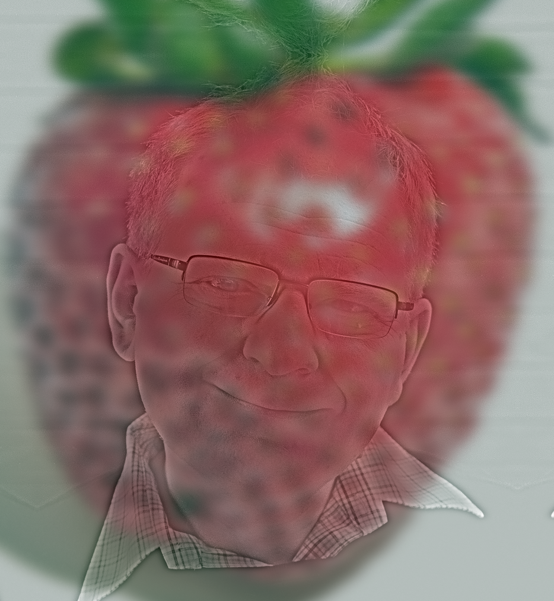
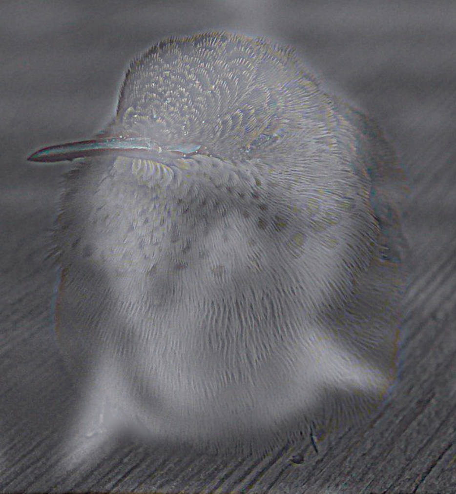
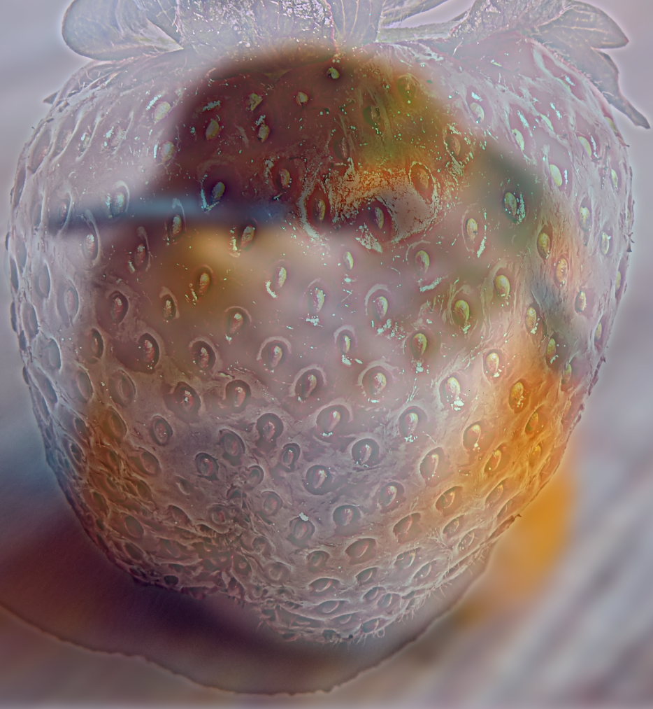
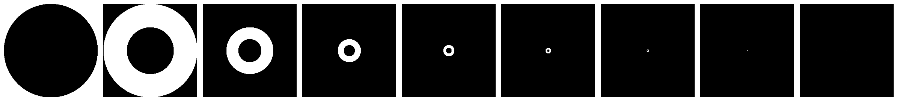
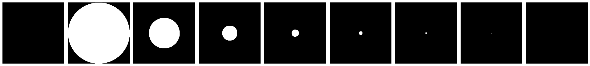
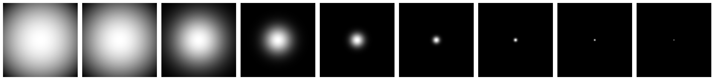
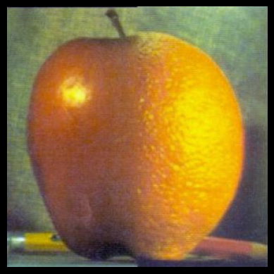

project 2
Fun with Filters and Frequencies!

Part 1: "Fun" with Filters
1.1 Finite Difference Operator
To calculate the gradient magnitude, I convolved the base image with derivative filters, stacked the two convolved layers, and took the norm of the resultant vector.
\[im_{D_x} = im * D_x\] \[im_{D_y} = im*D_y\] \[ (im_D)_{ij} = \left\lVert\begin{bmatrix} (im_{D_x})_{ij} \\ (im_{D_y})_{ij} \end{bmatrix} \right\rVert _2^2 \]
To find the threshold I plotted the histogram of pixel intensity levels and found that most of them were below 0.1. I found 0.14 to be the best threshold
1.2 Derivative of Gaussian
I created a gaussian kernel using cv2.GetGaussianKernel().
After blurring, I noticed the gradient magnitude matrix was much less noisy, and that the edges were better defined. Cool.
Then I created the DoG Filters.
I got almost the same result, but noticed that the DoG-convolved images had a little bit more texture. I think that this may be due to zero-padding, but I'm not sure.
Part 2: "Fun" with Frequencies
2.1 Unsharp Masking
To create the high-pass filter, I took the gaussian Kernel, normalized it, and subtracted it from a unit impulse. To create the unsharp-masking filter, I took this high-pass filter and added it back to the unit impulse.
Here is the Taj Mahal convolved with this unsharp masking filter
Here is my cat, de noot, after being sharpened, blurred, and sharpened again.
2.2 Hybrid Images
Prof. Efros once mentioned in lecture that his efforts to grow berries were undermined by a hummingbird which which was able to identify all the ripe berries. I present to you:
efrostrawberry
hummingfros
strawbird
My steps to separate an image into high and low frequencies were to:
- convert the image into frequencies with
np.fft.fft2() - apply a gaussian mask to the frequency spectrum to get the low frequencies
- subtract the low frequencies from the frequency spectrum to get the high frequencies
- convert the high and low frequency ranges into back into images using
np.fft.ifft2()
Here's an example of the frequency spectra for Prof. Efros, Efros' low frequencies, a strawberry, and its high frequencies. (this was a sneaky requirement btw)
of course, it was not always so simple. here's a flop (i forgot to pick \( \alpha \in [0,1] \) for blending)
2.3 Gaussian and Laplacian Stacks
my intuition: at each level of the stack, we only want a subset of the frequencies. this could be done by converting the image into frequencies, isolating the desired frequencies through some kind of mask, then converting those isolated frequencies back into an image.
At first I created ring masks with \(r_{i1} = 2^i, r_{i2}=2^{i-1}\), \( \forall i \in \{0, 1, ..., \log_2(\min(h,w)) \} \). This way I could isolate each octave band of frequencies, and convert these bands to images directly get the Laplacian stack. It did not really work.
Then I created circle masks with \(r_i = 2^i\), \( \forall i \in \{0, 1, ..., \log_2(\min(h,w)) \} \). This way I could isolate each group of frequencies, and convert these bands to images directly get the gaussian stack stack. It did not really work.
I thought it was all getting too complicated. I created a series of Gaussian masks with \(\sigma_i = \min(h,w) \times 2^{-i}\). Each gaussian was then scaled so that the maximum value was 1. This seemed to work fine.
To get the Laplacian stack, I took the difference of every two adjacent levels of the Gaussian stack, then appended the last layer of the Gaussian stack.
2.4 Multiresolution Blending
After abstracting away the process to get the Gaussian and Laplacian pyramids, all I had to do was:
- Get the Laplacian stack for both images, \( L_{im_1}, L_{im_2}\)
- Create a mask for the blending
- Get the Gaussian stack for the mask, \(G_m\)
- Iteratively compute: \[im_{blended} = \sum_{i=0}^{n} (L_{im_1})_i \times (G_m)_i + (L_{im_2})_i \times (1-(G_m)_i) \]
chillllllll
Le Oraple ... . .. . .. .
here are my other images: